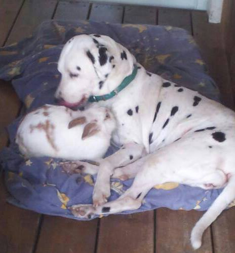

Hidden Gems בעולם
רשימה מסודרת של מסעדות טבעוניות מומלצות בעולם — לחיפוש, סינון ושמירה לטיולים.
חיפוש וסינון
טיפ: לחצי על “פתח במפות” כדי לנווט או לשמור.
0 מקומות

רשימה מסודרת של מסעדות טבעוניות מומלצות בעולם — לחיפוש, סינון ושמירה לטיולים.